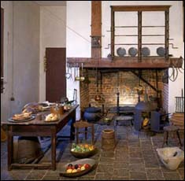

Cooking
Now that the food has been grown, preserved or shipped, it is time to prepare it! The kitchen at Mount Vernon was located right next to the house and was managed by two enslaved cooks, Lucy and Nathan.
Cooking took a lot of work and a lot of time. There was no oven or microwave-Lucy and Nathan had to spend hours building a large fire to do their cooking on. They often used instruments like skillets or pots, called Dutch Ovens. To measure ingredients, they used a small scale.
Dinners at the Washingtons included many courses, so Lucy and Nathan had to learn how to cook ham, beef, turkey, vegetables, and other foods all at the same time! It had to taste good too! Mrs. Washington would often supervise the activity in the kitchen so she could make sure everything was being prepared the way she liked. ←